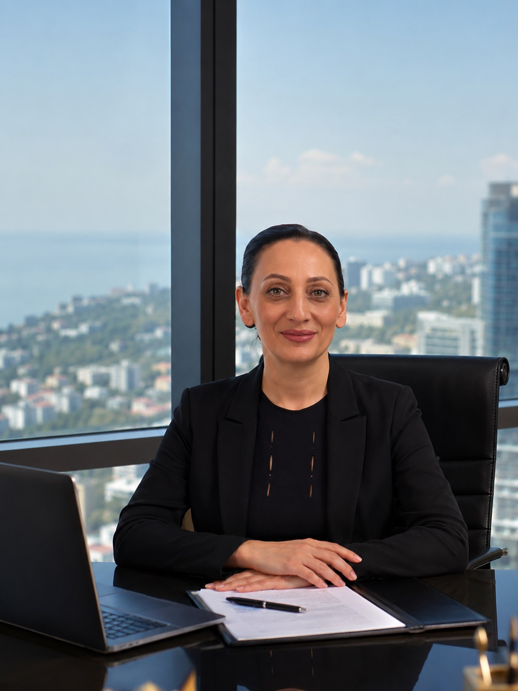
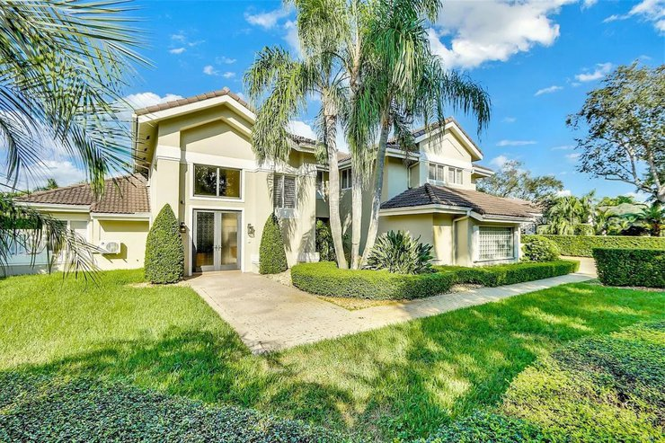
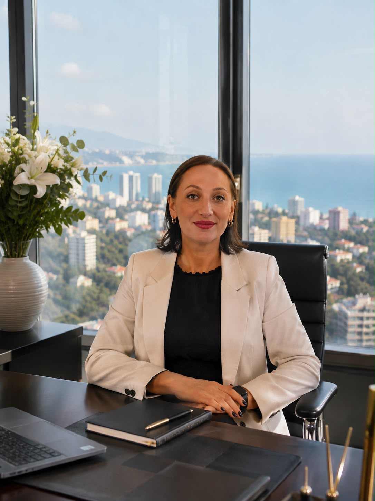
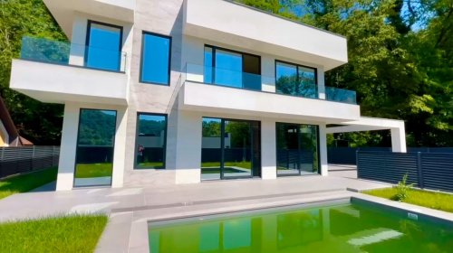

Семейные споры
Расторжение брака, раздел имущества и долгов супругов. Взыскание алиментов и определение места жительства детей.
Стоимость — по договорённостиОбсудить ситуацию
Семейные, наследственные, земельные и имущественные споры. Разберём вашу ситуацию и определим правовую перспективу.
Получить консультациюСтоимость — по договорённости.
Защита и реализация ваших прав
в суде и вне суда
Выберите направление, которое ближе к вашей ситуации. Стоимость определим после обсуждения сложности и объёма дела.
Расторжение брака, раздел имущества и долгов супругов. Взыскание алиментов и определение места жительства детей.
Вступление в наследство, восстановление сроков, оспаривание завещаний и свидетельств о наследстве. Ведение дел в нотариальных палатах.
Границы участков, реестровые ошибки и сервитут. Легализация самовольных построек и определение порядка пользования недвижимостью.
Взыскание задолженности по договорам и распискам. Споры по договорам долевого участия в строительстве.
Правовой анализ документов на недвижимость, в том числе первичных. Юридическое сопровождение на каждом этапе сделки.
Защита прав участников специальной военной операции, в том числе по вопросам получения выплат.
Иски, досудебные претензии и возражения. Апелляционные и кассационные жалобы, обращения в Верховный суд РФ.
Представительство по спорам с продавцами, исполнителями услуг и застройщиками.
Полное юридическое сопровождение оформления прав на объект недвижимости.
Сопровождение процедуры перераспределения границ земельного участка.
Получение уведомлений о начале и окончании строительства, в том числе по объектам самостроя. Определение соответствия объекта уведомлению.
Изготовление проектной документации на объекты недвижимости.
Расскажите о своей ситуации — определим возможные варианты решения.
Досудебные заключения и судебные экспертизы по земельным участкам и объектам капитального строительства.


Представительство по семейным, наследственным, земельным и имущественным спорам. Сопровождение сделок с недвижимостью и наследственных дел в нотариальных палатах. Защита прав участников СВО.
Участие в судах по всему Краснодарскому краю: в федеральных и мировых судах, апелляционных и кассационных инстанциях, Верховном суде РФ, Арбитражных судах Краснодарского и Ставропольского краёв.
Подготовка досудебных заключений и судебных экспертиз по земельным участкам и объектам капитального строительства.
Дипломы и сертификаты юридического образования и экспертной квалификации. Нажмите на документ, чтобы рассмотреть его.
Разбираем ситуацию и определяем реальную правовую перспективу.
Изучаем договоры, переписку, документы на имущество и другие материалы дела.
Формируем план действий: досудебный и/или судебный сценарий.
Готовим претензии и проводим переговоры, когда это возможно и выгоднее для вас.
Составляем иски и возражения, участвуем в заседаниях и отстаиваем вашу позицию.
Сопровождаем дело до фактического исполнения судебного решения.
Отзывы, размещённые на сайте «Ваше Право».
★★★★★«Развод и раздел имущества прошли быстро и по делу, без лишних нервов.»
★★★★★«Помогли отсудить землю обратно — был серьёзный спор о границах участка.»
★★★★★«Вступление в наследство — всё разложили по полочкам, сама бы не разобралась.»
★★★★★«Оспорили завещание, дело было непростое, но довели до конца.»
★★★★★«Алименты взыскали в сжатые сроки, спасибо за оперативность.»
★★★★★«Легализовали самовольную постройку на участке — процесс, о котором я и не знал.»
★★★★★«Сопровождение сделки с недвижимостью — проверили документы, всё чисто.»
★★★★★«Взыскали долг по расписке, который я уже не надеялся вернуть.»
★★★★★«Спор по ДДУ с застройщиком решили в нашу пользу.»
★★★★★«Консультация по правам потребителя — вернули деньги за некачественный товар.»
★★★★★«Определили порядок пользования домом с соседями, давний был конфликт.»
★★★★★«Устранили реестровую ошибку по участку — оказалось, дело решаемое.»
★★★★★«Помогли с сопровождением по выплатам участнику СВО, спасибо за внимательность.»
★★★★★«Установили сервитут — вопрос откладывал два года, а тут решили за месяц.»
★★★★★«Раздел имущества после развода прошёл спокойно, без лишнего давления.»
★★★★★«Оформили документы на дом — всё быстро и без беготни по инстанциям.»
★★★★★«Определение места жительства ребёнка — очень деликатно подошли к делу.»
★★★★★«Экспертиза по объекту капстроительства сильно помогла в суде.»
★★★★★«Вступление в наследство заняло полгода судов, но результат того стоил.»
★★★★★«Устранили препятствия в пользовании участком, сосед наконец успокоился.»
★★★★★«Сопровождение сделки купли-продажи квартиры — чувствовала себя спокойно.»
★★★★★«Проконсультировали по уведомлению о начале строительства, всё понятно объяснили.»
★★★★★«Досудебная претензия сработала, до суда дело не дошло.»
★★★★★«Обратился по перераспределению границ участка — решили вопрос без конфликта с соседями.»
★★★★★«Помогли с наследственным делом в нотариальной палате, всё сопроводили.»
★★★★★«Взыскание долга по договору подряда — деньги вернули полностью.»
★★★★★«Оспаривание свидетельства о праве на наследство — сложный случай, но справились.»
★★★★★«Легализация самостроя заняла меньше времени, чем я ожидал.»
★★★★★«Консультация по разделу имущества супругов — всё разъяснили простым языком.»
★★★★★«Проектная документация и сопровождение на всех этапах — большая помощь.»
Опишите, что произошло. На консультации разберём обстоятельства, документы и перспективы вашего дела.
Пн–Пт, с 10:00 до 17:00
Позвоните по телефону +7 918 207-09-86, напишите в мессенджер или оставьте заявку через форму на сайте — юрист перезвонит.
Стоимость определяется при первичном разговоре — исходя из сложности вашей ситуации и необходимого объёма работы.
Да, документы можно передать дистанционно. Формат работы обсудим на консультации.
Сроки зависят от категории спора и инстанции. На консультации обсудим реалистичный прогноз именно по вашей ситуации.
Возьмите документы, имеющие отношение к делу: договоры, свидетельства, переписку, судебные акты, если они есть.

Защита и реализация вашего права — наша основная задача.